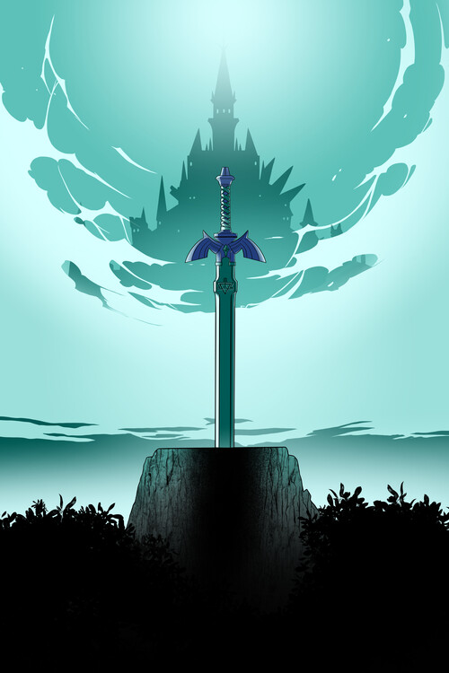

Master Sword
Também conhecida como a Espada Sagrada, é a lâmina forjada pelas deusas para selar o mal. Só pode ser empunhada por quem for digno, e brilha com uma luz azul quando o perigo se aproxima.

Lâminas do Caos
Armas de Kratos, presas por correntes aos seus braços e forjadas nas profundezas do Hades. Antes pertenceram ao próprio Ares, e carregam o fogo do submundo em cada golpe.

Lancer
Rifle de assalto padrão da COG, famoso pela serra elétrica acoplada no cano. Serve tanto pra combate à distância quanto pra execuções corpo a corpo em Gears of War.